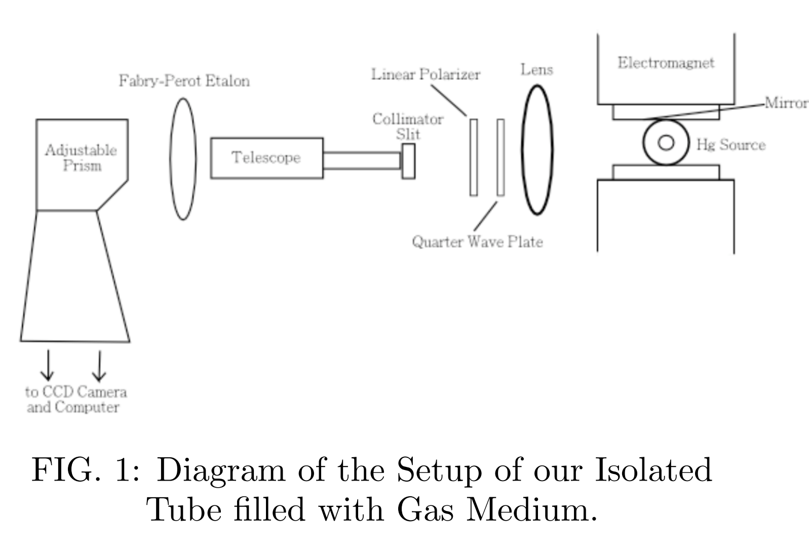
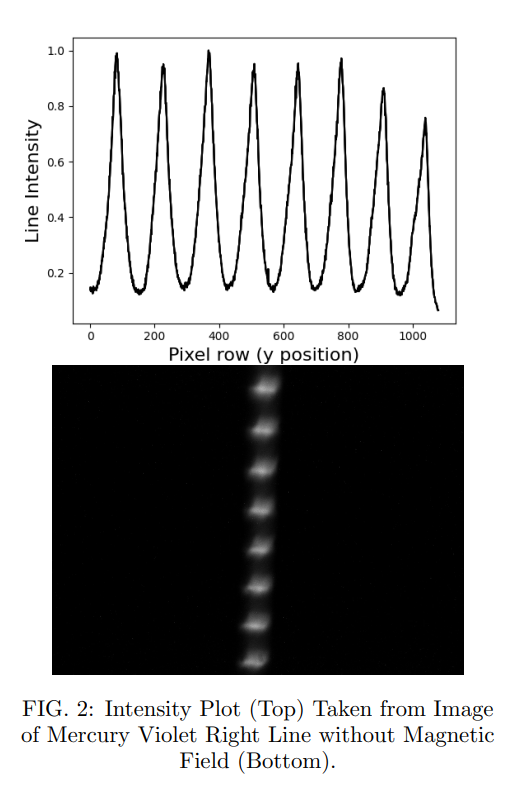
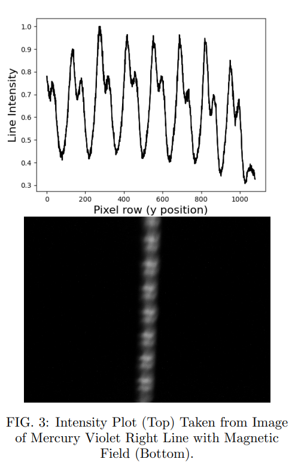
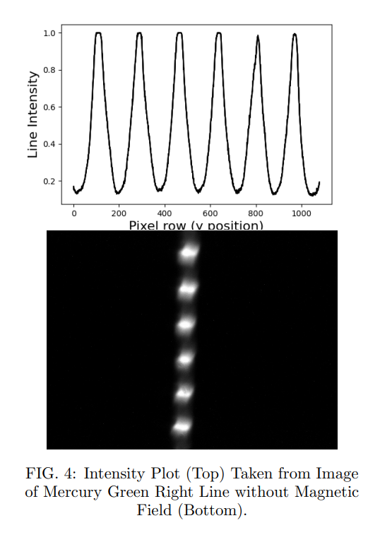
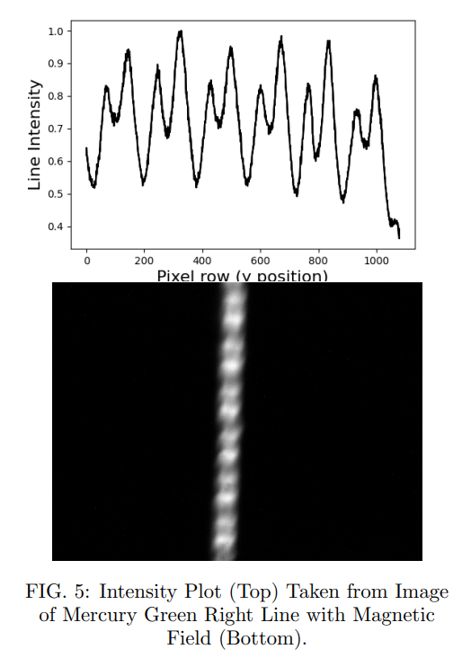

Observing the Zeeman Effect in Mercury
Keywords: Fabry Perot Interferometry | CCD Imaging | Quantum Mechanics | Polarization Optics
View Full Lab Report (PDF)Overview
The Zeeman effect describes the splitting of atomic energy levels in the presence of an external magnetic field due to the interaction between the field and the magnetic dipole moments associated with electron orbital and spin angular momentum. In this experiment, the anomalous Zeeman effect was investigated for several emission lines of mercury using a Fabry Perot etalon, polarization optics, and CCD imaging. Emission lines at 404.66 nm (violet), 546.07 nm (green), and the yellow doublet near 578 nm were analyzed by comparing interference fringe patterns with and without an applied magnetic field. Measured wavelength shifts were converted into energy shifts, allowing the determination of Landé g factors for each transition. The g factors were found to be g = 1.48 ± 0.16 for the violet line, g = 1.38 ± 0.14 for the green line, and g = 1.32 ± 0.21 for the yellow doublet. These values confirm anomalous Zeeman behavior and are generally consistent with theoretical expectations based on angular momentum coupling, with larger discrepancies attributed to experimental limitations for the yellow doublet. Using the measured energy shifts and applied magnetic field strength, the electron charge to mass ratio was determined to be e/me = 1.758 × 1011 C/kg, in agreement with the theoretical value. This experiment successfully verified the Zeeman effect in mercury emission lines and provided quantitative measurements of Landé g factors, demonstrating the role of angular momentum coupling and polarization in atomic spectroscopy.
Introduction & Theory
The Zeeman effect describes the splitting of atomic energy levels when an external magnetic field is applied. This splitting arises from the interaction between the magnetic field and the magnetic dipole moment associated with the orbital and spin angular momenta of electrons. The introduction of orbital and spin angular momentum in electrons allows for more possible energy states. The Zeeman effect was first observed by Pieter Zeeman in 1896 building off the work and hypotheses made by Michael Faraday three decades prior. Studying energy shifts in incoming light has allowed astrophysicists to observe the magnetic field strength of stellar objects.
The possible shifts in energy formed by the Zeeman effect are quantified by ΔE = μBgmJB, where B is the magnitude of magnetic field applied, μB is the Bohr magneton, mJ is the magnetic sublevel, and g is the Landé g factor specific to the energy level. Different Zeeman components produce characteristic polarization states; π components are linearly polarized and σ components are circularly polarized. The experiment uses a quarter-wave plate and linear polarizer to distinguish these transitions.
Apparatus and Methods
The light source being used in this experiment is a mercury lamp. Mercury light consists of 4 different wavelengths: green (546.07 nm), violet (404.66 nm), and the yellow doublet (576.96 nm and 579.01 nm). The mercury light source is located in an electromagnet that is practically a solenoid with n turns per unit distance. By rotating a linear polarizer, specific polarization states were selectively transmitted, allowing individual Zeeman transitions to be isolated from the overlapping fringe patterns.

The most significant tool in our setup is the Fabry Perot Etalon located in between the telescope and the prism. The etalon consisted of two parallel, partially reflective plates separated by a fixed distance of d = 5.047 mm. Incoming light interferes with its reflections causing constructive interference when 2d cosθ = mλ. Our CCD camera observes this interference pattern which also allows us to detect shifts in wavelengths. Comparing images with and without the B-field allowed us to determine the wavelength shift, with a correction R being made due to the conversion between pixels in the CCD to nanometers.
Results and Discussion
The Zeeman splitting of the mercury emission lines was successfully observed using a Fabry Perot interferometer and CCD imaging. Clear splitting of the interference fringes was detected when a magnetic field was applied, and the magnitude of the splitting increased linearly with the applied field strength. Using python code to measure the fringe displacements, wavelength shifts were calculated and converted to energy shifts for each transition.
- Mercury Violet: The g factor calculated for mercury violet was g = 1.48 ± 0.16. The classical Zeeman effect produces a g factor of 1, therefore our result presents further evidence that the Zeeman effect for mercury violet is anomalous. For the 3P0 to 3P1 transition, theoretical expectations give a g factor of 1.5, which is well within the range of our calculated g factor.
- Mercury Green: Our calculated g factor was g = 1.38 ± 0.14. The theoretical transition for mercury green is the 3P2 to 3P1 transition, which should also give us a theoretical value of g = 1.54. The uncertainties for our g factors differ slightly for each line, with differences in the intensities of the light detected by our CCD causing anything from saturation to noise and irregular pixels.
- Mercury Yellow Doublet: The g factor determined for the mercury yellow line was g = 1.32 ± 0.21. The reason for the much higher uncertainty is due to a much noisier image, as yellow was the dimmest which required us to increase the gain the most. For mercury yellow under the Zeeman effect, the transition that occurs was likely the 1P to 1S0 transition, which gives a theoretical g factor of g = 1.




To determine the electron charge to mass ratio we used our calculated energy shifts and g factors giving us the value of 1.758 × 1011 C/kg. The expected value is 1.760 × 1011 C/kg which agrees with our calculated value.
Conclusion
The Zeeman effect was successfully observed for multiple mercury emission lines using a Fabry Perot interferometer and CCD based image analysis. By measuring the fringe displacements and converting them into wavelength and energy shifts, Landé g factors were determined for each transition. The calculated g factor for mercury violet was g = 1.48 ± 0.16, which agrees well with the theoretical value of g = 1.5. The mercury green line produced a g factor of g = 1.38 ± 0.14, which is slightly lower than the expected value but still within experimental uncertainty. The mercury yellow doublet yielded a g factor of g = 1.32 ± 0.21, which deviates from the theoretical value of g = 1.0. This discrepancy is likely due to increased noise in the CCD images, overlapping transitions, and the relatively low intensity of the yellow emission lines. Using the measured wavelength shifts and g factors, the electron charge to mass ratio was calculated to be 1.758 × 1011 C/kg. Overall, this experiment provided a direct demonstration of the anomalous Zeeman effect and showed how interferometric techniques can be used to probe atomic energy structure and extract fundamental physical quantities.